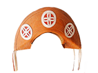

Início
Letra B
Letra C
Letra A
MIGUÉ - À toa, relaxado, largado, sem interesse
A PULSO - À força. Contra a vontade.
ABESTADO - Otário. Tolo.
ABESTALHADO - Otário. Tolo.
ABILOLADO – Doido.
ABIROBADO - Maluco.
ABISCOITADO - Maluco, desorientado.
ABUFELAR - Agarrar pela gola, agredir.
ABULETADO - Pessoa que ocupou um espaço tomou conta do "pedaço" (fulano aboletou-se na casa de sicrana e não sai mais).
ABUTICADO – Pessoa espantada, com os olhos vidrados (abuticados).
ACOITE – Chicote.
ACUNHAR - Chegar junto.
ADULAR - Agradar, bajular. Fazer a vontade de alguém.
AFEIÇOADO - Pessoa bem aparentada (bonita, arrumada).
AFOLOZADO – Folgado, arrombado.
AGONIADO - Aflito, afobado, amargurado, angustiado, apressado, indisposto.
AI DENTO - Resposta a qualquer provocação.
AJEGADO - Quem tem pênis grande.
ALDEOTA - e seguramente o maior bairro informal do País. Os especuladores imobiliários passaram a chamar de Aldeota todo bairro novo.
ALFININ - Espécie de rapadura.
ALPERCATA - Sandália de couro.
ALTEAR - Aumentar o volume do som. Subir algo.
ALUMIAR - Iluminar. Projetar luz sobre algo ou alguém.
AMANCEBADO - Amigado, aquele que vive maritalmente com outra.
AMARELO QUEIMADO - Cor laranja.
AMARRADO - Mesquinho.
AMOLEGAR - Apalpar ou apertar um corpo mole ou uma parte dele.
AMOSTRADO - Quem mostra que tem dinheiro ou poder.
ANDE TONHA! - Expressão popular que indica o ato sexual.
ANEL DE COURO – Ânus. Cú.
APERREAR - Encher o saco.
APETRECHADA - Dotada de beleza física.
APOIS - Expressão de concordância.
APOQUENTAR - Aborrecer, azucrinar, chatear.
APRAGATA – Alpercata.
APRUMADO - Arrumado, bem vestido, bonito, de bons modos.
APURRINHADO – Com raiva, puto.
ARENGA - Briga.
ARIADO - Desnorteado.
ARIAR A FIVELA - Dançar apertado, ralabucho.
ARRE EGUA! - Interjeição que pode significar qualquer coisa a depender do tom de voz e da ocasião (alegria, irritação...).
ARRETADO – Bom, legal, perfeito.
ARRIBAR - Ir embora.
ARROCHADO – Valentão.
ARROTO DE CU - Peido.
ARRUDIAR - Dar a volta.
ÁS DE COPAS - Ânus. Cú.
ASSUSTADO - Baile caseiro programado pelos jovens na casa de um deles; tertúlia.
ATAIAR - Atalhar. Ir por um caminho mais curto.
ATARENTADO - Aperriado, desnorteado, perdido.
AVALIE - Imagine.
AVEXADO - Apressado.
AZOGADO – Virado na peste, puto, agoniado, brabo.
AZUADO - Alguém desligado.
AZULAR – Dar o fora.
Início
Letra B
Letra C